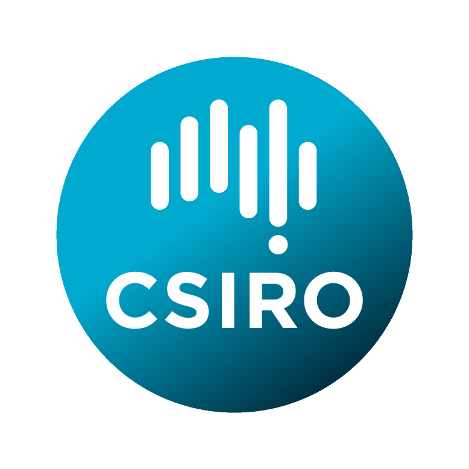
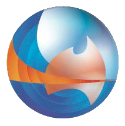
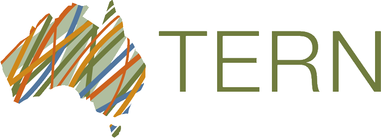
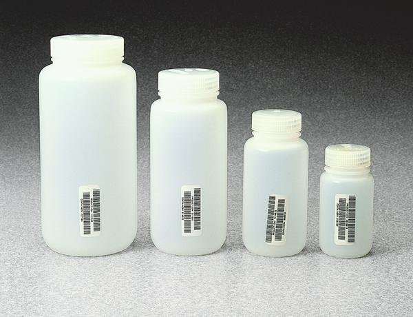
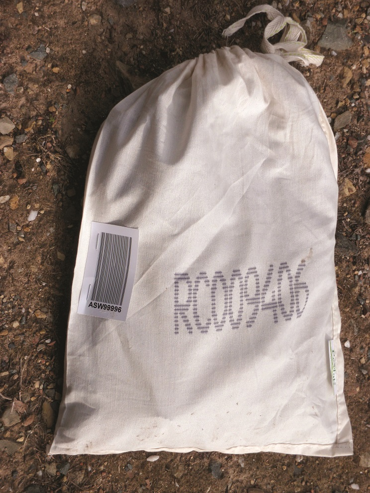

Linking Environmental Data and Samples

↪ Context
↪ Aims and scope
↪ Keynote speakers
↪ Registration
↪ Programme committee
↪ Organising committee
Sponsors
|  | ||
|  | ||
|  | ||
 |
 |
|
29 May - 2 June 2017, Canberra, Australia
An international symposium to be hosted by CSIRO.
Context
We live in the Information Age with an unprecedented wealth of data surrounding us. Society is being transformed through the connection of data - from databases, archives, sensors and models - to analytics and other services. Working at the boundaries of computational and environmental sciences, breakthroughs in enviro-informatics multiply the convergence already underway in natural sciences. The web paradigm of Linked Data promises a breakthrough in linked, science-ready information from persistent sources. However, environmental data is scattered across many organizations in formal and informal ways, expressed using many standards, and also frequently depending on physical samples taken from the real world.
Challenges are technical, social, and institutional. A growing community of earth and environmental scientists, working on the interface with computational science, are developing detailed practices and standards around identifiers, vocabularies, and software interfaces, which are necessary for wider community application. Currently, these efforts are fragmented, as is the communication of technical solutions and organisational best practices. Linking Environmental Data and Samples will bring together thought-leaders in the computational-environmental sciences convergence space, with the goal of triggering the adoption of uniform practices across Australia and internationally.

Aims and scope
Environmental science projects and assessments require data from a variety of sources. However, data structures are usually tailored to the particular context in which they were created, and transforming data to make it suitable for reuse involves educated guesses about its structure, and the meaning of embedded abbreviations and codes. Links to samples, and to features on the real world from these were taken, are often ambiguous. Too often data discovery depends on informal networks. This fragmentation imposes significant costs on projects, with as much as 80% of project effort spent on identifying and cleaning existing data.
‘Data’ has been a relative latecomer to the World Wide Web. While 'Analytics' and 'Big Data' have been fashionable, conventions and standards for accessing and sharing datasets have been weak. The World Wide Web Consortium proposed general guidelines for Linked Open Data, focussing on identifiers and protocols, along with some general expectations about file formats. Force11 developed the FAIR principles for scientific data, highlighting the need to pay attention to metadata and content standards. However, specific community practices and standards are required for each application domain.
Environmental and earth science data is collected by a large number of organizations, in both public and private sectors, with a heavy focus on observations and spatial data. The emerging frontiers in enviroinformatics use the tools of computer science, but are dependent on deep knowledge of the earth and environmental sciences. There is a plethora of data standards, and weak governance around controlled vocabularies, even in such basic concerns as units-of-measure. Linked Data solutions have been trialled, but scattered around a number of forums and initiatives in both environmental and computer sciences, and not yet broadly shared and deployed, or fully joined up.
The symposium will bring together leading researchers in earth and environmental informatics, to establish the current state of the art in environmental science data publication and its use of modern web principles. The focus is on linking data, with a particular interest in the integration of physical samples with datasets based on these. Key topics include:
- Persistent, web-compatible identification systems
- Registration models and systems
- Standardization of technical vocabularies and services
- Web semantics and ontologies
- Metadata proliferation and harmonization
- Enabling common scientific data formats for web linking (CSV, netCDF)
- Research data repositories
- Frictionless open data
Communities within the earth and environmental sciences that have been particularly active in these areas include:
- Marine geoscience and oceanography
- Biodiversity
- Earth observations (remote sensing)
Some of these communities have a particular reliance in physical samples, including geological sciences and biodiversity. The symposium will explore opportunities for alignment of identifier and registration systems from these disciplines, as well as more general research data systems like DataCite.
 The design of the symposium will build on the experience of the highly successful Earth Science Information Partnership (ESIP) series that has been running for more than two decades in North America.
Keynote speakers
- Adam Shepherd - Woods Hole Oceanographic Institution
- Bob Arko - Earthcube
- Dave Blodgett - USGS
- Doug Fils - Ocean Leadership
- Jens Klump - CSIRO
- Kerstin Lehnert - Columbia University / IGSN
- Krzysztof Janowicz - UCSB
- Markus Stocker - PANGAEA Project
- Rob Guralnick - Florida Museum of Natural History
- Donald Hobern - GBIF (TBC)
- Wim Hugo - SAEON (TBC)
- ... and more to come ...
The symposium will include a field trip to a number of national sample collections around Canberra.
Registration
Programme Committee
- Anusuriya Devaraju - CSIRO Mineral Resources
- Armin Haller - Australian National University
- Bruce Caron - ESIP Federation
- Francky Fouedjio Kameni - CSIRO Mineral Resources
- Jess Robertson - CSIRO Mineral Resources
- Jens Klump - CSIRO Mineral Resources
- Jonathan Hodge - CSIRO Oceans and Atmospheres
- Jonathan Yu - CSIRO Land and Water
- Jingbo Wang - NCI, ANU
- Natalia Atkins - IMOS, University of Tasmania
- Nicholas Car - Geoscience Australia
- Peter Taylor - CSIRO Data61
- Stephanie von Gavel - ALA, CSIRO
- Siddeswara Guru - TERN, University of Queensland
Organising Committee
- Simon Cox - CSIRO Land and Water
- Jens Klump - CSIRO Mineral Resources
- Lesley Wyborn - NCI, ANU
- Kerstin Lehnert - Columbia University
- Erin Robinson - ESIP Federation
- May Ling Goode - CSIRO Land and Water
Contributors
Simon Cox (@dr-shorthair), Jens Klump (@jklump), Lesley Wyborn, Kerstin Lehnert (@klehnert55), Bruce Caron (@BruceCaron), Erin Robinson, Jonathan Yu (@jyucsiro).